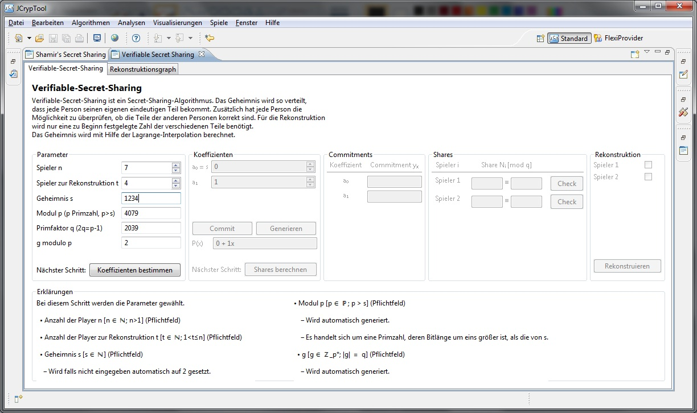
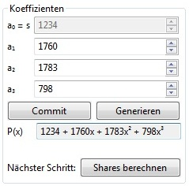
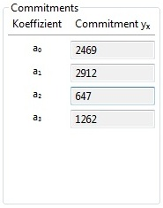

Shamir's Secret Sharing
Die Demonstration soll die Funktionsweise des Verifiable Secret Sharing Plug-ins zeigen.
Das Verifiable Secret Sharing Plug-in lässt sich über das Menü Visualisierungen oder über die View
Algorithmen im Tab Visualisierungen starten und in seiner Ansicht maximieren.

Das Plug-in gliedert sich in drei Bereiche: Den Header und den Bereich in dem Plug-In-Bereich.
Im Header ist eine kurze Beschreibung über das Plug-in angezeigt.
Im eigentlichen Plug-In-Bereich können die
Parameter festgelegt werden und die Berechnungen für das Verifiable Secret Sharing durchgeführt werden.
Am unteren Bildschirmrand gibt es noch einen Bereich Erklärungen wo zusätliche Informationen zum aktuellen Arbeitsschritt angezeigt werden.
Festlegung der Parameter für die Berechnung
Im Bereich Parameter werden die nötigen Parameter für den Ablauf des Algorithmus eingestellt.
Man wählt die Anzahl der Personen n aus, an die die Shares verteilt werden und die
Anzahl der Personen t, die für die Rekonstruktion nötig sind. Dabei darf die Anzahl der Personen
für die Rekonstruktion höchtens der Anzahl der gesamten Personen entsprechen und
beide müssen mindestens 2 sein, da sonst die Idee des Secret Sharing ad absurdum geführt werden würde.
Nachdem als nächstes das Geheimnis s gewählt wurde, wird automatisch der Modul p berechnet,
da dieser eine Primzahl sein muss. Es kann jedoch auch selbst ein Modul gewählt
werden. Auch in diesem Fall muss es wieder eine Primzahl sein. Der letzte Parameter ist die Primitivwurzel g modulo p.
Als Primitivwurzeln werden in der Zahlentheorie bestimmte
Elemente von primen Restklassengruppen bezeichnet. Die definierende Eigenschaft einer Primitivwurzel ist, dass jedes Element
der primen Restklassengruppe als Potenz der Primitivwurzel
dargestellt werden kann. Hier wird von JCrypTool wieder ein Wert berechnet,
der optional aber auch wieder selbst gewählt werden kann. Da jedoch die Berechnung einer Primitvwurzel
etwas komplexer ist, ist es ratsam den
zur Verfügung gestellten Wert zu verwenden.

Sind alle Parameter korrekt gewählt, ist es möglich mit einem Klick auf Koeffizienten bestimmen zum nächsten Schritt
fortzufahren.
Festlegung der Koeffizienten für das Polynom
und Berechnung der Commitments
Im Fenster Koeffizienten werden die Koeffizienten für das Polynom festgelegt. Diese können entweder von JCrypTool generiert werden lassen,
oder wieder selbst gewählt werden.
Die Koeffizienten müssen dabei natürliche Zahlen sein und kleiner als der Modul p. Der Koeffizient a0 ist dabei das zuvor festgelegte Geheimnis s.

Weiters gibt es in diesem Schritt den Button Commit. Die Berechnung der Commitments ist notwendig,
wenn man im weiteren Verlauf die verteilten Shares überprüfen möchte.
Nach der Berechnung werden die Commitments in einem eigenen Fenster angezeigt.

Die Berechnung der Commitments ist optional, da diese nur für die Überprüfung der Shares und nicht für die Rekonstruktion des Geheimnisses benötigt werden.
Falls man auf die Überprüfung verzichten möchte, kann man diesen Schritt überspringen.
Um die Shares zu berechnen und zum nächsten Schritt zu gelangen, klickt man auf Shares berechnen.
Überprüfung der Shares und Rekonstruktion
Der letzte Schritt verteilt sich auf die beiden Fenster Shares und Rekonstruktion.
Im Shares-Fenster werden die Shares und die Shares modulo p angezeigt. Über die Check-Buttons
können die Shares überprüft werden. Hierzu ist es notwendig,
dass zuvor die Commitments berechnet worden sind, da diese für die Berechnungen beim Check notwendig sind.
Um nachvollziehen zu können, dass ein veränderter
Share bei der Rekonstruktion das Ergebnis verfälscht, ist es möglich
die Shares zu verändern. Die Veränderung eines Shares zieht zwei Änderungen nach sich.
Zum einen bringt nun die Überprüfung
ein negatives Ergebnis und weiters wird nun bei der Rekonstruktion ein verfälschtes Geheimnis berechnet,
falls der geänderte Share verwendet wird.

Die Rekonstruktion erfolgt über den Button Rekonstruieren. Zuvor müssen noch die für die Rekonstruktion
gewünschten Shares ausgewählt werden.Damit die Rekonstruktion möglich muss die Anzahl der gewählten Shares
mindestens t sein.